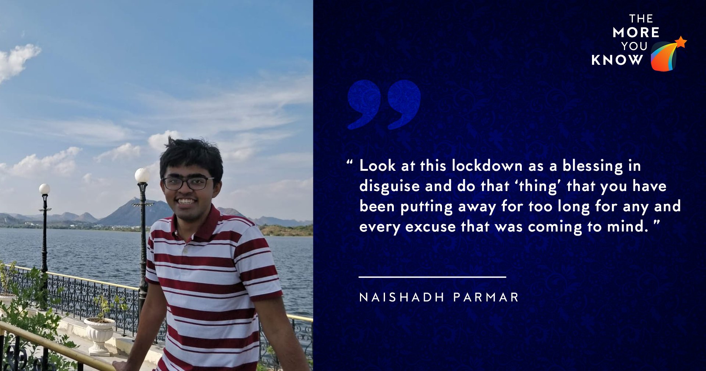

April 7, 2020
I’m gonna cut right to the chase. I have divided this blog in 3 parts. The first part talks about my
profile and background to put things in perspective, the second part talks about how I prepared for
whatever companies I sat for, the last part talks about the selection process and interview of the
primary company of interest (Gartner). You can read each section independently, depending on what you
might be interested in reading.

Profile and background
I am a Y17 student in Electrical Engineering and in my first year I was a part of team AUV where I was
involved mainly in the software part of the robot. At the end of the first year, I did a summer
internship in Android app development. Till this point, I was interested in a coding profile, but after
this I realized that I have reached saturation in the coding field, and I’d rather learn something new
and Excel (pun intended, you’ll understand later) in that.
I switched teams and joined ERA in my 2nd year. I tried to learn more things related to machine learning
(since this was the new fad, and I thought I’d rather just follow the crowd). I did Andrew Ng’s course
on machine learning (yeah, cliché, I know) and took up a project on machine learning applied to images
as well so that I can learn some things hands-on. Till this point, I was interested in robotics, so I
applied to a number of robotics startups (in India AND abroad) for an internship role in path planning,
computer vision or just robotics in general. Somewhere along the line (I can’t put my pulse on exactly
where), I started losing interest in robotics and just wanted to try a role in data analysis (churning
huge amounts of data and making sense of it). I made use of some LinkedIn connections and landed a
summer internship at Deloitte Bangalore at the end of 2nd year.
I am gonna take a detour here and talk about the importance of internships before 3rd year. I can’t
emphasize enough how much this one internship changed my perspective towards my involvements in campus,
towards my attitude and just how everything in life now looked. My work involved using R and Excel (now
revisit the pun) to download data, analyze data and make a presentation explaining the model to the
senior management. I grew in terms of the technical skills I had, the confidence to take up ANYTHING new
thrown my way and my professional communication skills (communicating with so many people in the
company). But more importantly, I knew that data science is something I want to do, something I can grow
in, this corporate setting is something I like and this is the direction I should go ahead in. You can
observe in this timeline, the first internship told me that coding is not for me and the second
internship told me that data science IS for me. This is how previous internships mold your career and
this is why I encourage everyone to have some internship experience.
During this internship, I explored finance by doing some online courses and I realized that a cross
between finance and data analysis is the perfect career path for me.
Oh and this internship was only till June 2019, so I went on a grand US road trip (drove through ~28
states) with my family in July 2019. Totally exhilarating experience!
Preparation for companies
If you skipped the previous section, I had interned at Deloitte Bangalore in data science and had
finally decided that a cross between finance and data analysis is the perfect career path for me. As
such, I only had algo trading, banks and data science companies in my mind when the internship season
began, and I also tried to align my preparation accordingly.
For data science, I already had working experience at Deloitte, so that worked A LOT in my favour. I
only had to revise concepts learned during the internship, revise notes of MSO201 (if you can gather
notes for this course from anyone, I don’t think anything else is needed to learn probability and
statistics atleast from the internship season point of view) and I did the 50 challenging problems book
for probability and statistics interview questions. For finance, there is not much preparation required.
Knowing that we are engineering students, not a lot of finance knowledge is expected of us. Nonetheless,
I decided to look up keywords on Investopedia and keep following the trail of suggested reading on the
website. Just following this trail on Investopedia gives you a lot of brief knowledge about the world of
finance.
One thorn to the rose of data science is that the screening test almost always has a coding component.
So I had to brush up my data structures and algorithms concepts (I barely got a B in the course, and I
have no shame in admitting that I am NOT GOOD at it at all). I used InterviewBit to its full extent and
practiced problems on it. I also practiced puzzles on the website. These puzzles are common questions in
quant, data science and general interviews.
I wasn’t planning to sit for any group discussion (GD) heavy companies (ITC, HUL) but I was planning for
Nomura and it had a GD component in its selection process. I attended SPOs mock GD session for Nomura
and found out some common topics for GDs in finance. I looked up all these topics on the internet and
made notes on it so that I can enter the GD room with some context in mind to help me better guide the
GD. As it turned out, I got my internship before I could even apply to Nomura.
I had applied to Deutsche Bank (finance), Tower (algo trading), CapitalOne (data science, finance),
Goldman Sachs (quant), Gartner (data science) and got shortlisted for the last three.
Selection process and interview
Gartner hosts a screening test first which has mental aptitude, machine learning, data science,
probability and statistics and coding sections. I did well in all the non-coding sections. I got
shortlisted for the interview.
The night before the interview, I revised all the notes I had made for data science and probability and
statistics. All of that preparation helped in the interview. The interview was divided in 3 parts. The
first part was heavy on data science, the second part was heavy on product development and the last part
was the HR round.
The first round of data science was the best experience I have had. The interviewers had a look at my
resume, saw my experience at Deloitte and asked me to explain a bit about the work. After that they gave
me a case where data science had to be applied and asked me about my approach towards solving the case.
In the process, they tested my data science and probability and statistics skills (deciding feature
importance, when to use F1 score and when to use precision/recall). After this, they asked me an
algorithms-related question which I unfortunately cannot recall right now. But it was fairly simple and
I was able to answer it correctly. After this I was asked to wait for some time.
The second round of product development was a new experience for me. I was not prepared for this round
at all. I was asked a question which is apparently standard in product development roles. I was asked to
think through the development of a specified product. I searched that same question after the interview
and obviously there was no right answer but there are a lot of different ways to go about it. Interviews
like this only want to find out how out-of-the-box your thinking process is. I think I did fairly well.
After this I was asked to wait for some time.
The last round was HR. There are some standard questions in HR which you should look up on the internet.
Why choose our company? Why should we hire you? What are your strengths? What are your weaknesses? Where
do you see yourself in five years? Tell us about a time when you faced a difficult situation and how you
managed it. Tell us about a time when you directed a group of people to achieve a common goal. These are
questions you should think about BEFORE entering the interview, NOT DURING the interview. The questions
in my interview were mostly directed towards finding out how my aspirations have shaped up until now.
The answers were mostly candid and honest recollections of my life and my family. At the end of the
interview I was a guesstimate question, which I did fairly as well.
Concluding remark
Look at this lockdown as a blessing in disguise (I was, until a few days ago, but things changed, let’s
not go there) and do that ‘thing’ that you have been putting away for too long for any and every excuse
that was coming to mind. Now is the time for you to make the productive use of your time to achieve
something. For any doubts regarding general career or data science roles, feel free to ping me on
Facebook Messenger.
- Naishadh Parmar
-Edited by Lakshay Rastogi